Devenez membre ou connectez-vous!
Bienvenue sur vintage classic
Dans cette section, vous trouverez les modèles les plus rares et vos favoris de la gamme Porsche Classic
-
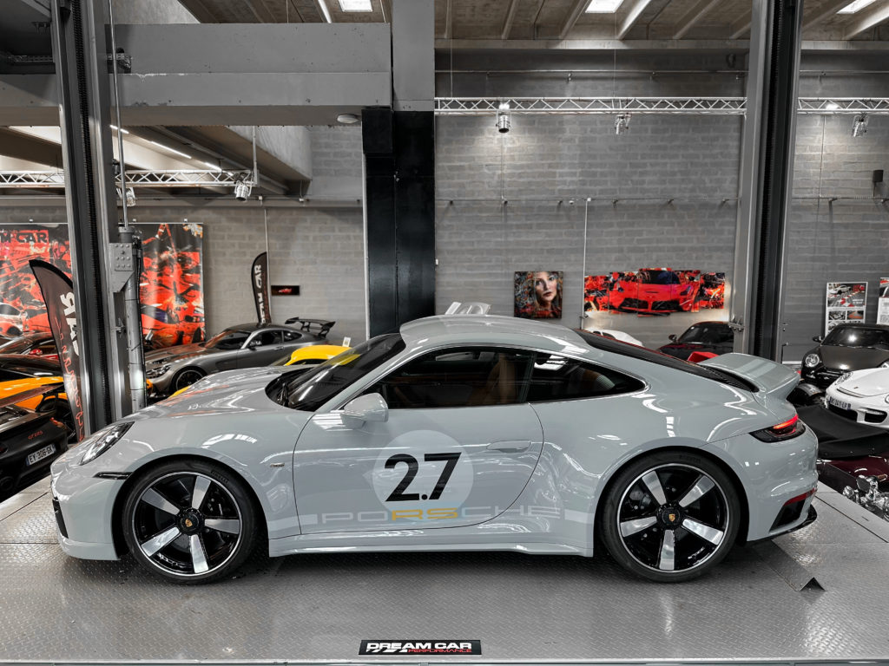
911 sport classique
KM -
€ -
-
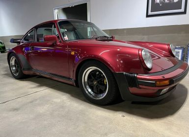
930 turbo
KM -
€ -
-
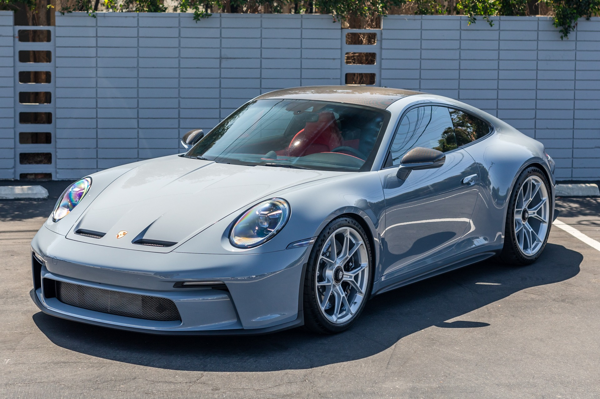
911 touring
KM -
€ -

Philosophie Porsche Classic
Nous préservons 80 000 pièces d’origine et les sentiments qu’elles procurent.
Nous préservons les souvenirs d’enfance.
Nous préservons les discussions techniques sur les véhicules et les frissons ressentis dans les virages.
Nous préservons les valeurs analogiques dans un monde numérique.
Nous préservons le rêve d’une voiture sportive.
Atelier de restauration et sur-mesure
Concrétisation d’un rêve. Avec un véhicule Porsche Classic, vous
vivez un rêve éveillé.
Préserver et entretenir ce rêve est une tâche que nous assumons avec
toute notre expérience. L’atelier de restauration Porsche Classic
possède une vaste expérience en matière d’entretien, de réparation
et de restauration de véhicules classiques.
Parce que nous utilisons les outils spéciaux, les gabarits de
châssis et les fiches techniques d’origine, tout en travaillant dans
un atelier doté d’équipements de haute technologie.
Fondamentalement, notre philosophie est de remettre les véhicules
dans un état aussi fidèle à l’original que possible lors d’une
restauration en atelier.
Pour réaliser votre rêve personnel de véhicule classique, Porsche vous propose le nouveau programme sur-mesure. Vous trouverez ici les différentes possibilités pour transformer vos idées en une pièce unique exclusive.
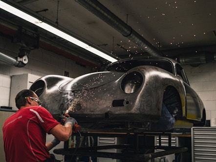
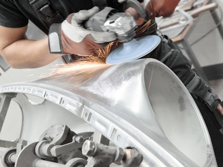
Concours de Restauration
Depuis 2014, le Concours de Restauration Classic met en avant les connaissances et le savoir-faire exceptionnel du réseau Porsche en France. Plus qu’une course contre la montre, une compétition contre le temps, qui offre une occasion rare, d’assister à toutes les étapes de restauration de modèles d’exception.
Pièces de rechange, etc.
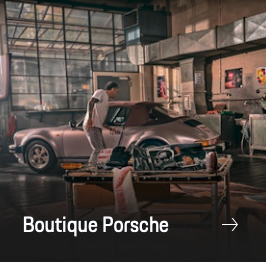
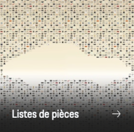
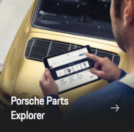
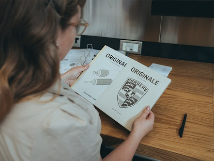
Magazine "ORIGINALE"
La fascination suscitée par Porsche est intemporelle. Et pour que
cela perdure, Porsche Classic produit des pièces de rechange
d’origine pour réparer, restaurer et optimiser votre voiture de
collection.
Nous vous en présentons quelques-unes dans le magazine « ORIGINALE »
de Porsche Classic – car chaque pièce a sa propre histoire. Outre
des informations passionnantes sur les processus de production et de
test, vous trouverez également des renseignements sur les rééditions
de produits et le catalogue de pièces actuel.
Plus d'offres
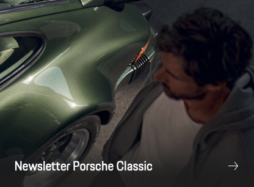
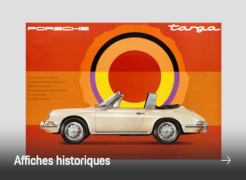